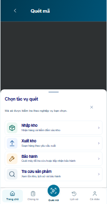
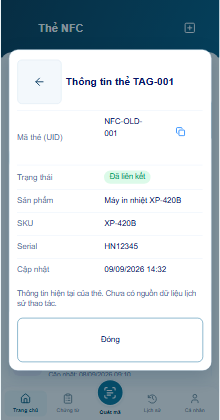

Hoa Nam · 6 cải tiến thao tác
Hình thức chờ bạn reviewGiữ 24 board / 91 panel, khung 494×950 và footer đã chốt. Đây là ảnh chạy thực tế trong prototype; nhấn ảnh để xem đầy đủ.
Mở preview mới · Báo cáo kiểm chứng
214 test logic đạt. Các luồng chính đã kiểm bằng trình duyệt trên nhiều viewport. Bàn phím/camera/NFC và WMS thật chưa xác minh; không có lưu nháp bền qua tải lại app.
Vùng bấm trên màn hình nhỏ
Back, lọc và xóa có chỗ riêng sau khi co khung.
Nhập mã tập trung · P04
Camera thu gọn; input, bộ đếm và mã vừa nhập dễ theo dõi.
Nhập mã tập trung · P05
Ô nhập giữ focus và không tự gửi trong lúc gõ tiếng Việt.
Sản phẩm vừa tra cứu
Tối đa 3 sản phẩm, chỉ nhớ trong phiên theo tài khoản và kho.
Trước Sau
Sau
Tìm UID bằng Enter
Một kết quả đã xác minh mở dialog chi tiết hiện có.
Khoảng ngày nhanh
Dùng chung picker; chỉ Áp dụng mới lưu.
Trước Sau
Sau
Đổi phiếu có so sánh
Đọc đầy đủ người nhận, số lượng và các thông tin sẽ thay thế.
Cửa sổ thấp
Vùng bấm ưu tiên dành chỗ thật để tránh bấm nhầm. Danh sách dài vẫn cuộn trong app; không cắt dữ liệu để ép vừa khung.
P03 · chọn tác vụ
P07 · xem thẻ